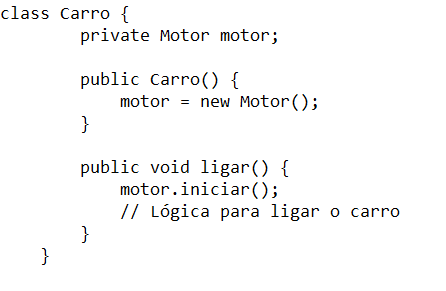
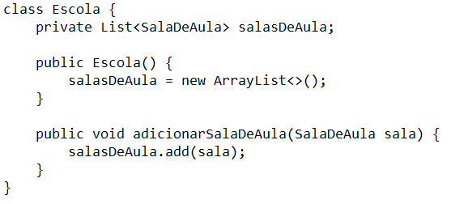
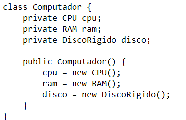
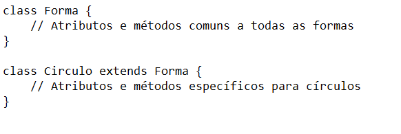

O relacionamento entre objetos, em programação orientada a objetos (POO), refere-se à forma como objetos interagem uns com os outros para realizar uma tarefa ou funcionar juntos em um sistema. Existem vários tipos de relacionamentos de objetos, dos quais os principais são:
1. Associação: É uma relação simples onde um objeto usa os serviços de outro objeto. Por exemplo, um carro (objeto) pode ter um motor (outro objeto) que é usado para funcionar.
2. Agregação: É um relacionamento "tem-um" mais forte, onde um objeto contém outros objetos, mas os objetos contidos podem existir independentemente do objeto contêiner. Por exemplo, uma escola contém salas de aula, mas as salas de aula podem existir sem a escola.
3. Composição: É um relacionamento "tem-um" mais forte, onde um objeto é composto por outros objetos e esses objetos só existem dentro do objeto contêiner. Por exemplo, um computador é composto por CPU, RAM e disco rígido, e esses componentes só existem dentro do computador.
4. Herança: É um relacionamento "é-um" onde uma classe herda características e comportamentos de outra classe. Por exemplo, uma classe "Círculo" pode herdar da classe "Forma".
Estes são alguns dos principais tipos de relacionamentos de objetos em POO. Eles ajudam a modelar o mundo real de forma mais eficiente em código e a facilitar a reutilização e manutenção do código.